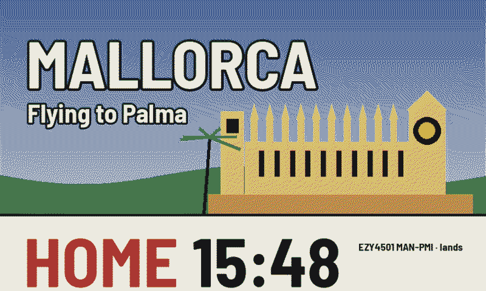
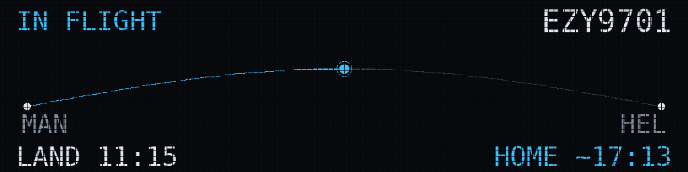
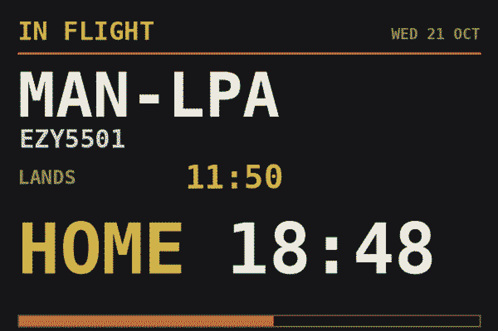
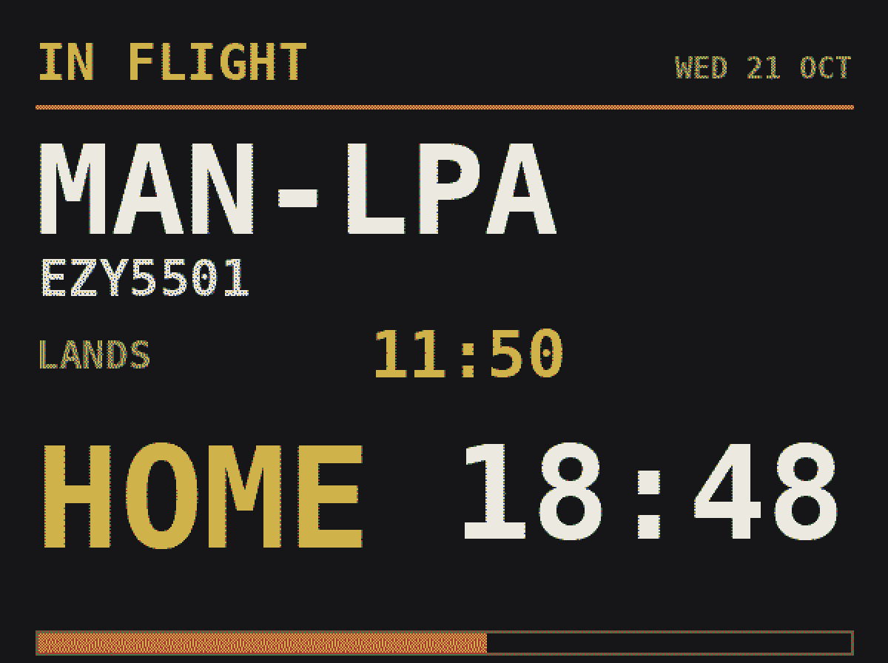
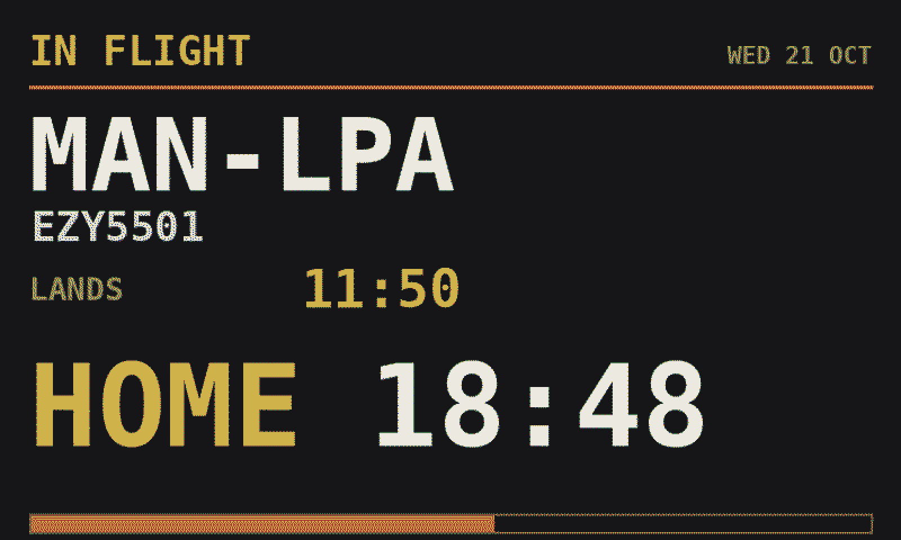
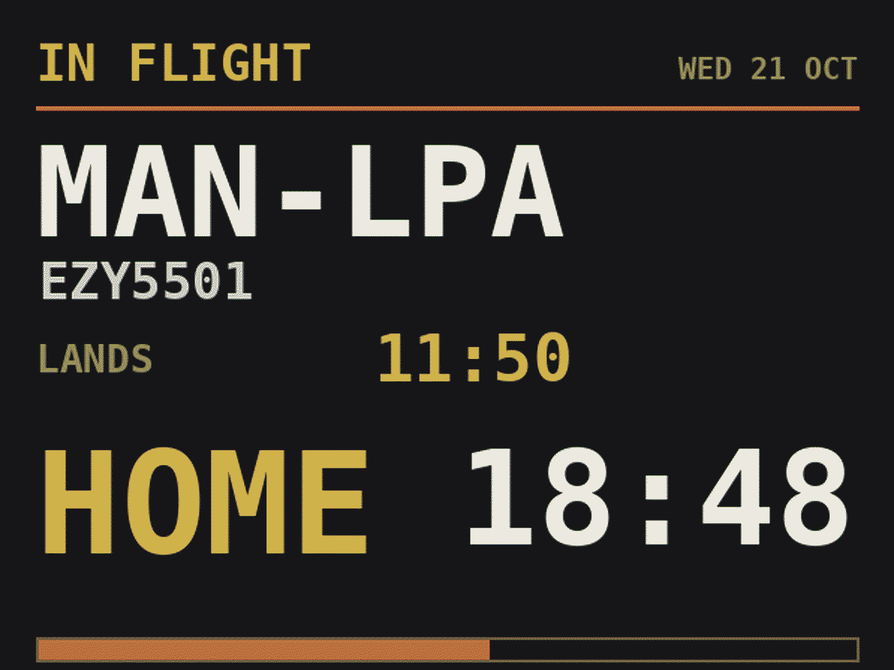
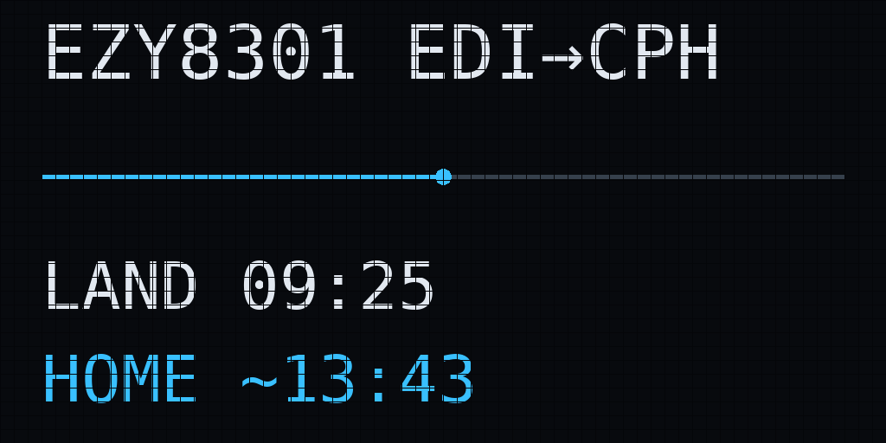
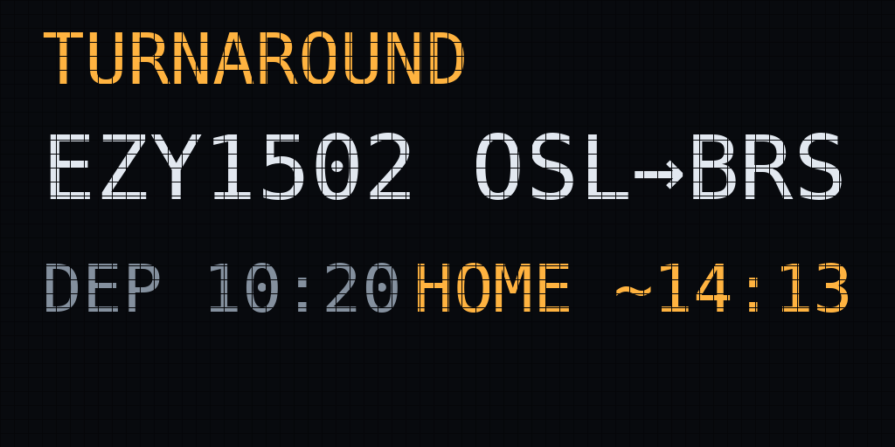
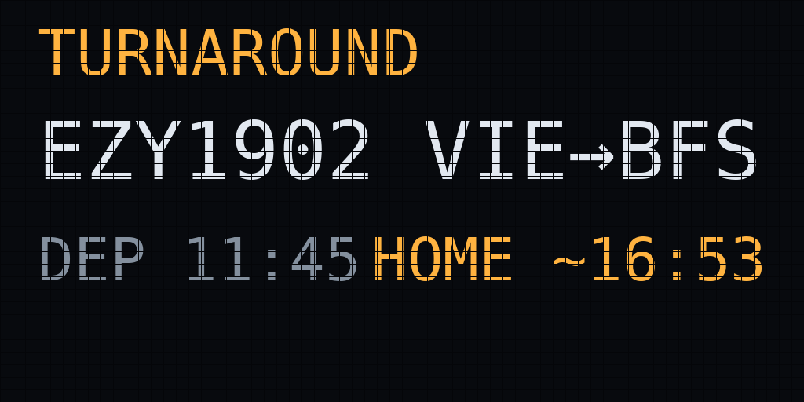

Ident drives two quite different kinds of display. Neither is better; they suit different rooms. Here's how to choose, and what we'd buy.
Colour e-paper comes two ways: Ident for E1002, a ready-made 7.3″ display with its own battery (in testing, not on sale yet), or Ident for Pi, a Raspberry Pi with a Pimoroni panel you put together yourself. LED is Pi only. The two e-paper routes compared.


Drawn by Ident's own software from sample rosters. The LED picture is the simulator's preview: a real panel shows the same lines as plain pixel text, without the arc.
Blend in or stand out.
Put the display behind a mount in a picture frame and it reads as a print on the wall. Or leave the Raspberry Pi on show behind the glass, wires and all, for something that looks like it came off the flight deck. The software is the same either way; the frame setting draws the board inside whatever window your mount leaves.
| Colour e-paper | LED matrix | |
|---|---|---|
| Looks like | Printed paper in a frame | An airport departure board |
| In a dark room | Invisible, no light at all | Glows; dimmable, but still a light source |
| Updates | ~30 seconds, on change | Instantly, continuously |
| Power | Under a watt; holds its picture unplugged; can run on a battery | Several watts, more at full brightness; mains only |
| Assembly | Nothing (E1002), or push onto the Pi, no soldering | Ribbon cable, power injection, a bonnet |
| Best in | Hall, kitchen, bedroom, lounge | Study, office, workshop, bar |
| Cost | £50–£230 for a Pi panel; about £100 for an E1002 | £17–£45 for panels, plus a bonnet and supply |
Pimoroni Inky Impression panels. They sit straight on the Raspberry Pi's 40-pin header, no soldering, no wiring, and have four buttons on the side.




The same board at the four sizes, roughly to scale.
| Panel | Resolution | Colours | Indicative | Verdict |
|---|---|---|---|---|
| Inky Impression 7.3″ · Pimoroni | 800×480 | 6 | £79.50 | The one to buy. Readable across a kitchen, wide enough for the route maps and the full duty timeline. |
| Inky Impression 4.0″ · Pimoroni | 600×400 | 6 | £49.50 | Cheapest way in and genuinely good on a desk or by the front door. Small for a wall. |
| Inky Impression 13.3″ · Pimoroni | 1600×1200 | 6 | £229.50 | A proper wall piece, and the maps look superb. Slowest to redraw, and by far the most expensive part of the build. |
| Inky Impression 5.7″ | 600×448 | 7 | n/a | Discontinued. The panel Ident was originally built on and still fully supported, but don't go hunting for one. |
Standard HUB75 panels, driven through hzeller's rpi-rgb-led-matrix library. Cheap, bright, and the closest thing to a real departure board.



These pictures come from Ident's simulator, which draws smooth lettering. A real panel shows the same four lines (what's happening, the route, the landing time and home) in plainer pixel lettering. The route arc you can see on the 128×32 picture is the simulator's only; a real panel shows text.
| Configuration | Pixels | Indicative | Verdict |
|---|---|---|---|
| Single 64×32 panel | 64×32 | ~£17–£22 + bonnet | Start here. The commonest and cheapest HUB75 panel: one thing to mount, one supply. Long names are cut short. |
| 2 × 64×32 chained | 128×32 | ~£35–£45 + bonnet | Twice as wide, so longer names fit on each line. Two panels to join and mount. |
| Single 64×64 panel, or 128×64 | 64×64 | n/a | Not yet. A lovely shape, but the LED layout is drawn for a panel 32 pixels high, so the bottom half would stay empty. We'll say so here once a taller layout is drawn and tested on a real panel. Please don't buy one for Ident yet. |
Panel prices checked at The Pi Hut on 5 November 2026.
Unlike e-paper, the LED route means ribbon cables, a separate power supply, and building the driver library on the Pi: it isn't installable with pip. It's well-documented and thousands of people have done it, but set aside an afternoon rather than an hour, and be comfortable following a wiring guide.
Small two-colour e-paper modules with no buttons and a ribbon you must solder. They work in principle but the display area is tiny and the experience is poor.
Ident will happily drive one via the simulator, but a backlit screen glowing all night in a hallway is exactly what e-paper exists to avoid.
SPI displays without a maintained Python driver mean writing one. If it isn't an Inky or a HUB75 panel, ask first.
The commonest LED-matrix failure. Flicker, colour shifts and random reboots are nearly always the supply, not the code.
The software is identical. Every style adapts to the panel you own, and you can switch panels later without buying anything else.
Nothing about the configuration changes between panel types.
Ident works out which display is fitted at boot.
Including the combinations that don't work: see parts.